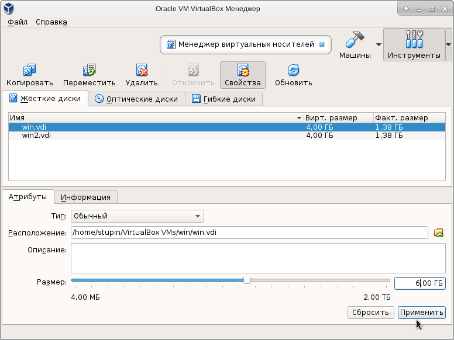

В одной из прошлых заметок я описывал использование VirtualBox в Debian Stretch. При создании виртуальной машины я указал слишком маленький размер образа диска.
Чтобы изменить размер образа VDI, имеющего динамический размер, нужно в главном окне Virtual Box переключиться на инструмент "Менеджер виртуальных носителей", выбрать образ диска, указать его новый размер и нажать на кнопку "Применить".
На этом можно было бы закончить рассказ, если бы VirtualBox знал бы что-нибудь о разделах и файловых системах, находящихся внутри образа диска. Так как он ничего об этом не знает, поменять размеры всего этого нам придётся вручную. Для этого, кроме самого VirtualBox, нам понадобятся три пакета:
Если какие-то из пакетов ещё не установлены в системе, то установить их можно такой командой:
# apt-get install parted ntfs-3g partclone
Первым делом нам понадобится преобразовать образ диска виртуальной машины из формата VDI в формат, представляющий собой побайтовую копию диска. Для этого воспользуемся утилитой VBoxManage, которая поставляется совместно с VirtualBox:
$ VBoxManage clonemedium --format RAW win.vdi win.img
Несмотря на кажущуюся универсальность концепции файла в Unix, простые файлы отличаются от блочных устройств, поэтому нам нужно отобразить простой файл с образом диска в блочное устройство. Для этого воспользуемся утилитой losetup, которая как раз позволяет делать то, что нам требуется:
# losetup -f win.img
Смотрим, какому блочному устройству соответствует файл образа диска:
# losetup -a
Вывод команды:
/dev/loop0: [2051]:14947724 (/home/stupin/VirtualBox VMs/win/win.img)
Приступим к изменению размеров раздела. Воспользуемся для этого утилитой parted и для начала выведем таблицу имеющихся разделов. В качестве единицы измерения размеров и координат разделов попросим утилиту использовать секторы:
# parted /dev/loop0 unit s print
Вывод команды:
Model: Loopback device (loopback) Disk /dev/loop0: 8388608s Sector size (logical/physical): 512B/512B Partition Table: msdos Disk Flags: Number Start End Size Type File system Flags 1 63s 4185215s 4185153s primary ntfs boot
Судя по таблице разделов, в образе диска имеется только один первичный раздел, который является загрузочным. Общий размер образа - 8388608 секторов. Переместим конечный сектор первого раздела в конец образа диска, для чего укажем номер последнего сектора раздела на единицу меньше:
# parted /dev/loop0 resizepart 1 8388607s
Теперь нужно изменить размер файловой системы в первом разделе образа диска. Для начала сделаем так, чтобы операционная система узнала о разделах, имеющихся на блочном устройстве /dev/loop0. Для этого воспользуемся утилитой partprobe, которая имеется в комплекте утилиты parted:
# partprobe /dev/loop0
После поиска разделов появится файл устройства /dev/loop0p1, соответствующий первому первичному разделу в образе.
Для изменения размера файловой системы, как уже было написано выше, мы воспользуемся утилитой ntfsresize. Однако, прежде чем изменить размер файловой системы, узнаем текущий размер этой файловой системы и раздела, на котором она расположена. Сделать это можно при помощи самой утилиты ntfsresize:
# ntfsresize -i /dev/loop0p1
Вывод команды:
ntfsresize v2016.2.22AR.1 (libntfs-3g) Device name : /dev/loop0p1 NTFS volume version: 3.1 Cluster size : 2048 bytes Current volume size: 2142798336 bytes (2143 MB) Current device size: 4294935040 bytes (4295 MB) Checking filesystem consistency ... 100.00 percent completed Accounting clusters ... Space in use : 1440 MB (67,2%) Collecting resizing constraints ... You might resize at 1439602688 bytes or 1440 MB (freeing 703 MB). Please make a test run using both the -n and -s options before real resizing!
Изменяем размер файловой системы до размеров раздела:
# ntfsresize -s 4294935040 /dev/loop0p1
Вывод команды (нужно будет подтвердить её выполнение нажатием y):
ntfsresize v2016.2.22AR.1 (libntfs-3g) Device name : /dev/loop0p1 NTFS volume version: 3.1 Cluster size : 2048 bytes Current volume size: 2142798336 bytes (2143 MB) Current device size: 4294935040 bytes (4295 MB) New volume size : 4294935040 bytes (4295 MB) Checking filesystem consistency ... 100.00 percent completed Accounting clusters ... Space in use : 1440 MB (67,2%) Collecting resizing constraints ... WARNING: Every sanity check passed and only the dangerous operations left. Make sure that important data has been backed up! Power outage or computer crash may result major data loss! Are you sure you want to proceed (y/[n])? y Schedule chkdsk for NTFS consistency check at Windows boot time ... Resetting $LogFile ... (this might take a while) Updating $BadClust file ... Updating $Bitmap file ... Updating Boot record ... Syncing device ... Successfully resized NTFS on device '/dev/loop0p1'.
Размер файловой системы изменён и её даже можно смонтировать, но вот попытка загрузить с неё систему приведёт к ошибке "disk read error occured". Дело в том, что мы изменили размер файловой системы, но загрузчику операционной системы об этом не сообщили.
Чтобы загрузчик узнал о новом положении файловой системы на диске и её размере, воспользуемся уже упомянутой утилитой partclone.ntfsfixboot. По умолчанию эта утилита пытается узнать геометрию жёсткого диска при помощи системного вызова ioctl. Поскольку образ диска, даже будучи отображённым в блочное устройство, не превращается в настоящий диск, то системные вызовы ioctl будут завершаться ошибкой.
Однако, у современных жёстких дисков реальная геометрия учитывается встроенным в жёсткий диск контроллером, а снаружи весь диск выглядит как линейная последовательность блоков. Этот режим адресации называется LBA - Logical Block Addressing - логическая адресация блоков. Поэтому геометрия диска, которая записана в загрузчике, в настоящее время является атавизмом и реально не используется. В поля геометрии диска, работающего в режиме LBA, записываются максимальные возможные значения: 255 головок, 63 сектора на дорожке. Самая первая по счёту дорожка на диске обычно называлась загрузочной, т.к. на ней располагался загрузочный сектор. Внутри раздела диска содержится собственный загрузочный сектор, который инициирует загрузку операционной системы, находящейся в этом разделе. Смещение загрузочного сектора относительно начала раздела тоже может быть разным для файловых систем разного типа. В случае с NTFS этот загрузчик находится в 63 секторе внутри раздела.
Вооружившись всей этой информацией, поправим загрузочный сектор файловой системы NTFS на первом разделе образа диска:
# partclone.ntfsfixboot -b -w -h 255 -t 63 -s 63 /dev/loop0p1
Задача почти выполнена. Отключаем отображение файла с образом диска в блочное устройство:
# losetup -d /dev/loop0
Преобразовываем отредактированный образ обратно в формат VDI (на всякий случай старый файл с образом VDI оставляем):
$ VBoxManage convertfromraw --format VDI win.img win2.vdi
Осталось выбрать новый файл образа в настройках виртуальной машины и попробовать загрузить виртуальную машину с нового образа диска. Если всё в порядке, то исходный VDI-файл и его побайтовую версию можно удалить.